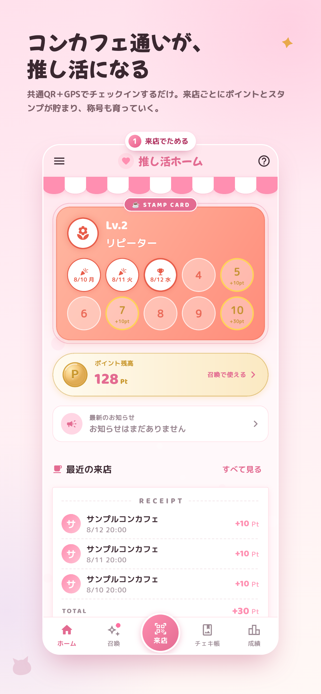
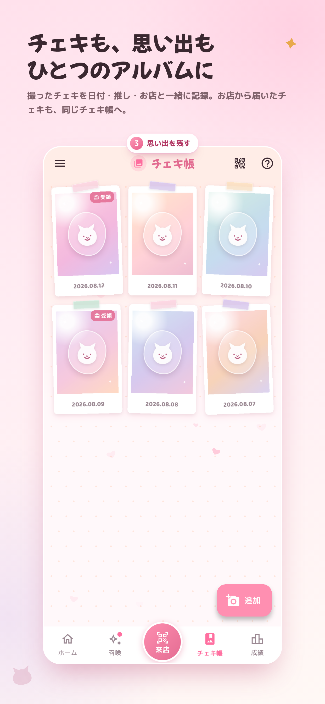
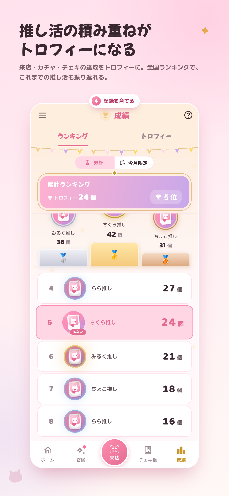

来店でスタンプ
アプリの「来店」からQRコードを読み取り、GPSで店舗を確認。スタンプとポイントが貯まります。
CONCAFE × OSHIKATSU
コンカフェへの来店を、スタンプとポイントに。ガチャで推しキャストのアバターを集め、撮ったチェキも思い出も、ひとつのアプリに残せます。


YOUR OSHIKATSU STORY
お店でチェックインすると、スタンプとポイントを獲得。貯めたポイントは、キャストの衣装違いアバターが登場するガチャに使えます。
来店、コレクション、チェキ。ばらばらだった推し活の思い出を、ひとつのストーリーにつなげます。
FEATURES
お店に着いた瞬間から、推し活の記録を振り返る時間まで。コンカフェ通いの楽しさを一つの流れにまとめました。
アプリの「来店」からQRコードを読み取り、GPSで店舗を確認。スタンプとポイントが貯まります。
ポイントでガチャに挑戦。推しキャストの衣装違いアバターを集め、プロフィールにも設定できます。
撮ったチェキを日付・キャスト・店舗と一緒に整理。お店から届く公式チェキも同じ一冊に残せます。
APP SCREENS
来店履歴も、ガチャの出会いも、チェキも、トロフィーも。続けるほど自分だけの記録が育ちます。


HOW IT WORKS
使い方はシンプル。チェックインから始まる体験が、次にお店へ行く楽しみへつながります。
共通QRコードとGPSで最寄りの対応店舗を確認し、来店を記録します。
来店で貯まったポイントを使い、キャストのアバターをコレクションします。
チェキ帳やトロフィーで、これまでの推し活を自分らしく振り返れます。
START YOUR COLLECTION
iPhone・Android対応。アプリ本体は無料です。現在は鳥取県米子市内の一部の対応店舗で利用できます。
FAQ
現在は鳥取県米子市内の一部の対応コンカフェで利用できます。対応店舗は今後順次追加予定です。
アプリ本体は無料で利用できます。一部に有料のアプリ内課金があります。
QRコード読み取り時の来店判定と不正防止のために使用します。移動の追跡や広告には利用しません。
手動で登録したチェキは端末内だけに保存され、外部へ送信されません。